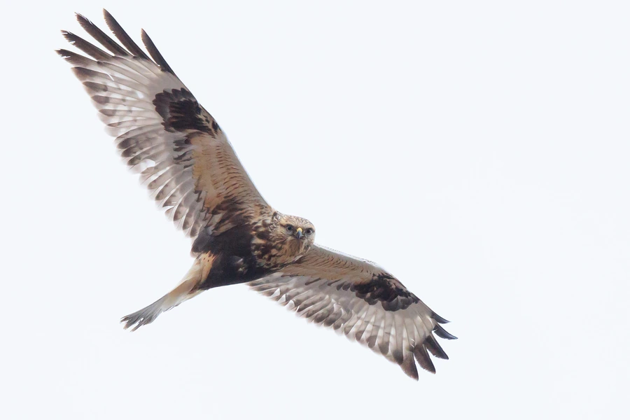

鸟类 · 动物界
毛脚鵟 Buteo lagopus

繁殖于北极苔原的大型鵟类，跗跖被羽至趾，故名毛脚。越冬南迁至中国北方田野，常在雪地上空悬停搜寻田鼠。
- 分类
- 门脊索动物门纲鸟纲目鹰形目科鹰科属鵟属
- 栖息环境
- 繁殖期在北极苔原与高山冻原；越冬于农田、盐碱荒地、草甸、海滩与河口湿地。
- 地理分布
- 环北极苔原繁殖；越冬于欧亚大陆温带、北美及中国东北至长江中下游。
- 保护级别
- IUCN 红色名录列为无危（LC）；中国国家二级保护野生动物。
物种志
毛脚鵟体长约四十五至六十厘米，翼展一百二十至一百五十厘米，体重六百至一千四百克，雌鸟显著大于雄鸟。头颈色浅，上体暗褐并具淡色羽缘，下体乳白，腹部有一大块深褐色斑，尾羽白色而端部具宽阔黑带。与其他鵟类最明显的区别是跗跖完全被羽直至趾基，适应苔原严寒。虹膜褐色，嘴黑色，脚黄色。
它繁殖于环北极苔原与高山冻原，在土坡、崖壁或低矮灌丛上营巢，每窝产卵二至四枚，主食旅鼠和田鼠，种群数量随鼠类周期波动。冬季南迁至中国东北、华北、黄淮平原及长江中下游，常见于农田、盐碱地、海滩与草甸，喜逆风悬停或定点观察，发现猎物后急速下扑。中国境内为冬候鸟，部分年份在华北越冬数量较多。
形态与习性
- 体长45–60 厘米
- 翼展120–150 厘米
- 体重600–1400 克
- 食性旅鼠、田鼠为主，兼食小鸟
- 繁殖苔原土坡或崖壁营巢，每窝 2–4 枚
- 迁徙环北极繁殖，冬季南迁至温带越冬
趣味知识
- 跗跖被羽到趾部，是适应苔原严寒的显著特征。
- 会像红隼一样逆风悬停，锁定雪层下的田鼠。
- 越冬羽色较浅，飞行时白色尾羽上的黑带十分醒目。